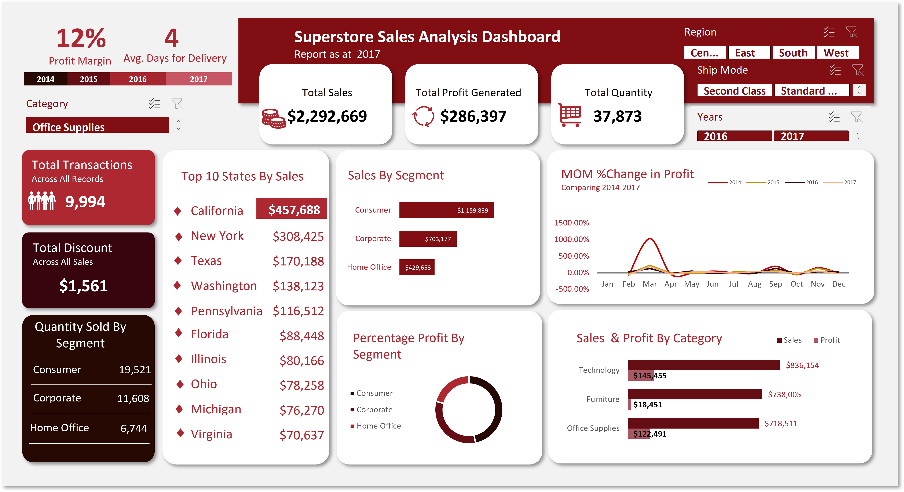

Supplier Quality and Performance Analysis
I introduced Power BI to the company, streamlining the analysis and visualization of supplier performance data to provide actionable insights into material defects and production downtime. Additionally, I implemented a procurement system that centralized data across plants, enabling better vendor management and improving the overall consistency and quality of materials sourced for production.


This project involved working with a dataset that had contained various data quality issues, including data entry errors, duplicates, missing values, and other inconsistencies, which required extensive data cleaning and transformation to ensure accuracy and reliability for analysis.
Superstore Sales Analysis

A comprehensive descriptive analysis of Superstore sales data was conducted over multiple years to identify key trends and customer behavior patterns. The analysis provided valuable insights into sales performance, helping to inform future business strategies.
Delmich Students' Summary Report

Getting hands dirty was inevitable with this dataset, packed with errors, inconsistencies, and missing values. After an intense cleaning process, it was transformed into a reliable resource for analysis, delivering actionable insights and meaningful results.
The Impact of Rising Costs of Living on Economic Health in Africa

The analysis explored how increasing living expenses impact economic stability and growth, focusing on key areas such as consumer behavior, inflation, employment, and poverty. It highlighted the challenges faced by many emerging economies, particularly in Africa, due to high inflation, volatile commodity prices, and currency fluctuations.